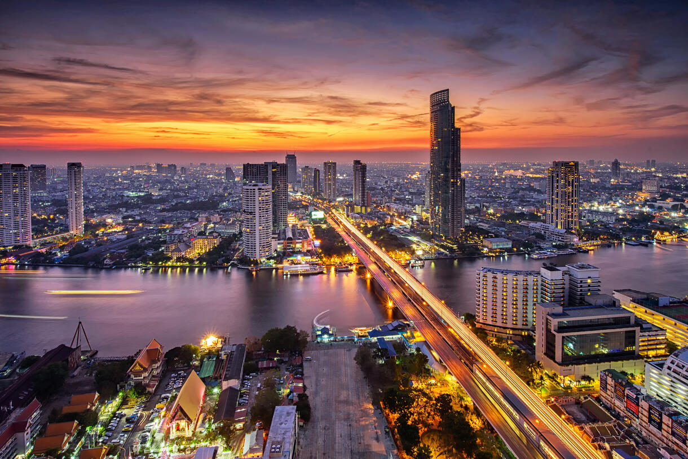

Le plan du voyage consiste de resté à Phuket pour une semaine pour se d'étendre sur les plages de Phuket au long de l'océan avec l'eau claire et aller au parc national de Khao Sok sur des beateaux touristiques dans des grottes et aller plongée en apnée dans des récif de corail. Après on vas aller directement dans le centre de Thaïlande, le capitale. À Bangkok on vas resté dans un hotel proche du park Lumpini, on vas dégusté du nourriture traditionelle et visité des attraction tourristique popullaire. Ces attraction touristique consiste du parc Lumpini et le Big Buddha de Phuket.
| Nouriturre | Photo | Place |
|---|---|---|
| Pad Thaï | :max_bytes(150000):strip_icc()/20250214-SEA-PadThai-AmandaSuarez-hero-4251c730d61a40ba935f2d43153d6862.jpg) |
Thipsamai |
| Pad Krapow (ou Kra Pao) |  |
205 Richmond road, Ottawa, ON K1Z 6W4 |
| Khao Soi | .jpg) |
Place |